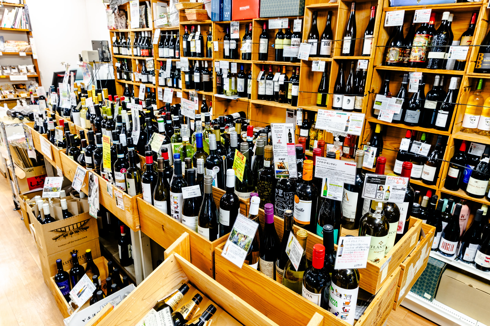

店舗前の駐車スペースをご利用ください。
はい、ご予算や用途に合わせた商品をご提案いたします。
現金とクレジットカードがご利用いただけます。
ワインの種類（赤・白・シャンパン）とご予算をお願いします。
味覚は10人10色です。基本を覚えることは大事ですが、それ以上にご自身が「飲みたい」と思ったものが大正解です。そして、それは変化していきます。その変化を楽しんでいただければと思います。
一般的に、色の濃い食材（お肉など）には赤ワインを、色の薄い食材（お魚や鶏肉、お野菜など）には白ワインを合わせると、風味がお互いを引き立て合い、より美味しく感じられます。迷ったら「料理の色や濃さに近い方」を選ぶと失敗が少ないです。
お肉料理には、重めの赤ワイン（カベルネ・ソーヴィニヨンなど）がよく合います。鶏肉や豚肉なら軽めの赤ワインや白ワインもおすすめです。 お魚料理には白ワイン（シャルドネやソーヴィニヨン・ブランなど）が定番です。こってりした味付けのお魚や、マグロなど色の濃いお魚には、軽めの赤ワインも試してみてください。 和食のだしを使った繊細な味付けには、和の食事の風味を壊さない、酸味が穏やかで軽やかな白ワインが合わせやすいです。
まずは酸味の少ないまろやかなワインをおすすめします。南フランスや南イタリア等、南部のワインがリーズナブルで飲みやすいと思います。最初からワインの品種を覚えるのは大変です。赤でも白でも数本試してみると、ご自身の好みが少し見えてくると思います。
ラベルには、「造り手（生産者）」「収穫した年（ヴィンテージ）」「産地」「ぶどうの品種」「甘さの程度（甘口/辛口など）」などが書かれています。まずは「品種」と「甘辛表記」だけを見て、気に入ったものから覚えていくと選びやすくなります。わからなければ、お気軽にお尋ねください。
主に、ぶどうの品質（育てる土壌や気候）、造り方の手間暇（熟成期間や技術）、希少性（収穫量の少なさなど）が違います。値の高いものは一般に複雑で奥深い風味を持ちますが、値の安いワインにも、手軽に楽しめる良さがあります。ご自身の目的やご予算に合った一本を見つけることが大切です。
未開栓は直射日光と高温を避け、温度変化の少ない暗所に横に寝かせて保存するのが適しています。理想は12～15℃前後ですが、ご家庭では床下収納など「涼しく暗い場所」を守れば十分です。
一度開けると、空気に触れて風味が変わり始めます。種類にもよりますが、通常は開けてから2〜3日を目安に飲みきることをおすすめします。 飲み残したワインは、コルクや蓋をしっかり閉めて、冷蔵庫に入れ、なるべく空気に触れないようにすることが大切です。専用のポンプでびんの中の空気を抜く道具（バキューム・ストッパー）を使うと、より日持ちします。
グラスを回すことで、ワインが空気に触れ、閉じこもっていた香り（アロマ）が開き、より豊かになるためです。ただし、回さなくても美味しく飲めますので、無理にする必要はありません。香りを比べたいときや、より楽しみたいときに試してみてください。
常温は室温に影響されるため、必ずしも「常温」に戻すべきとも限りません。 赤ワインは少し冷やした15度〜18度くらい、白ワインやシャンパンなどはもっと冷やした6度〜12度くらいが、一般的に美味しく飲めるとされています。
ほとんどのワインは、買ってすぐに飲んで美味しくなるように造られています。 特にラベルに何も書かれていなければ、すぐに飲むのがおすすめです。 寝かせると良くなるワイン（熟成向き）は、一般に値が高く、渋みや酸味が強めです。迷ったら店頭で「今飲む用か、寝かせたいか」をお伝えください。
年号入りは、その年に収穫されたぶどうだけで造られたもので、その年の気候や特徴が反映されます。特別な記念日や、その年の出来事を思い出したいときに選びます。 年号なしは、複数の年のぶどうを混ぜて造られることが多く、造り手の目指す決まった味が楽しめます。普段飲みや、安定した品質を求める時におすすめです。
ラベルの甘辛表記を確認します。迷ったら「辛口希望」「やや甘め希望」と店頭で伝えてください。同じ品種でも造りで甘さは変わります。
「シャンパン」と名乗れるのは、フランスのシャンパーニュ地方で、決められたぶどうの品種を使い、瓶の中で二度目の発酵（二次発酵）をさせるという、厳しい基準を満たして造られたものだけです。他の発泡酒（スパークリング・ワイン）は、それ以外の国や地域、製法で造られています。シャンパンはきめ細かな泡立ちと複雑な香りが特徴です。
シャンパンなどの発泡酒は、一度開けると泡が抜けやすいです。専用の栓（ストッパー）を使い、しっかり密閉して冷蔵庫に立てて保存すれば、1〜2日は泡立ちを保てます。
数種類の食べ比べができるアソートパックをご用意しております。
初めての方には、カマンベールのような白くて柔らかいチーズや、モッツァレラのような淡泊な風味のチーズ、チェダーなどのねっとりとした硬めのチーズがおすすめです。においが少なく、食べやすいものからお試しください。
チーズとワインは、産地を合わせる（フランスのチーズにフランスのワイン）、似た風味を合わせる（コクのあるチーズに重い赤ワイン）、互いの弱点を補う（塩気の強いチーズに甘いワイン）などが基本です。白くて柔らかいチーズは白ワインと、青かびのチーズは甘口のワインと相性が良いとされています。
チーズは乾燥に弱いので、ラップや専用の包み紙でぴったり包み、密閉できる容器に入れて、冷蔵庫の野菜室（温度が少し高いため）などで保存するのがおすすめです。食べる分だけ切り分け、残りはなるべく空気に触れさせないようにしましょう。
水分が多く柔らかいチーズ（カマンベール、モッツァレラなど）は、凍らせると風味や食感が大きく変わってしまいます。硬めのチーズ（パルミジャーノ・レッジャーノなど）なら、すりおろすなどして小分けにすれば凍らせて保存できますが、なるべく早めに食べることをおすすめします。
表面の白い粉は、アミノ酸が結晶化したもので、旨味の素でもあり、食べても問題ありません。特に長期間熟成された硬いチーズによく見られます。
チーズの種類や保存状態によって大きく異なります。未開封のものはラベルに書かれた期限を目安にしてください。開封後は、柔らかいチーズは数日〜1週間程度、硬いチーズは数週間程度を目安に、風味やにおいを確かめながらお早めにお召し上がりください。